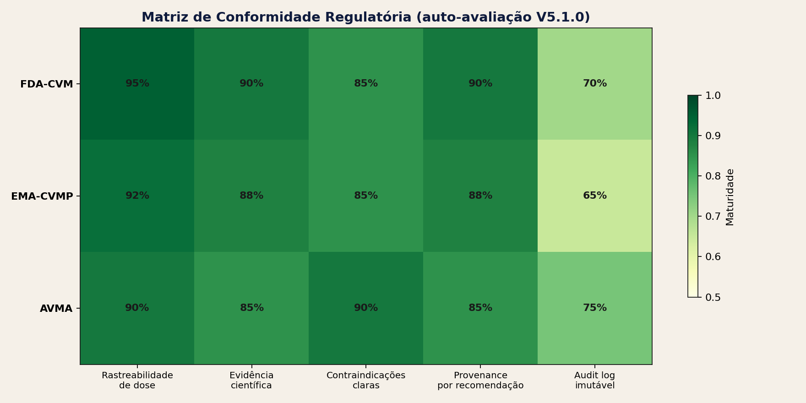
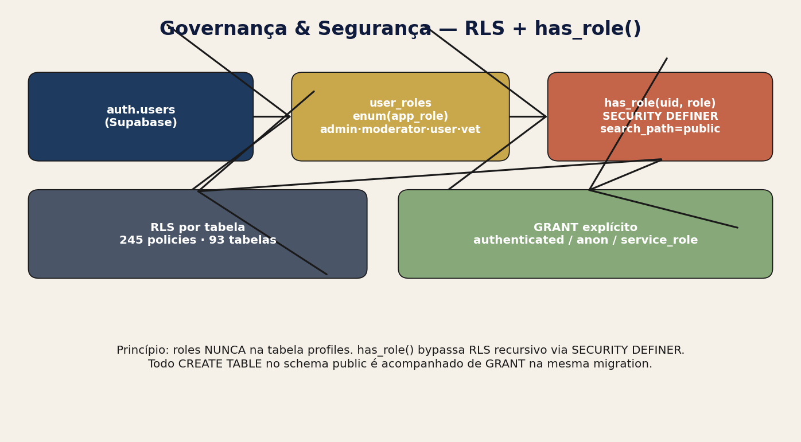
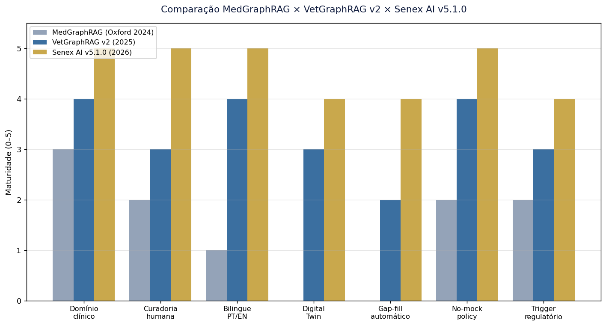
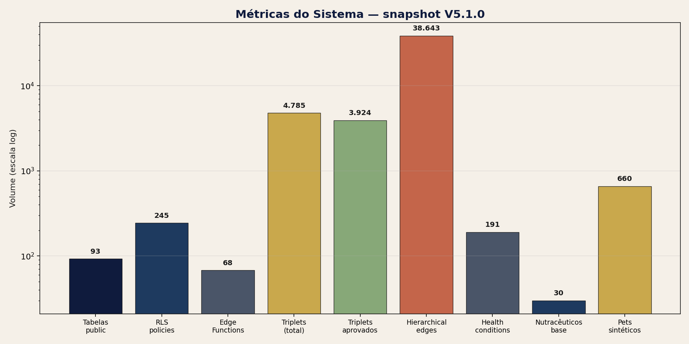

Auto-Auditoria Técnica e Regulatória — Documento Executivo + Técnico Completo
31 de maio de 2026
Versão 5.1.0 · Documento Executivo + Técnico Completo · ~30 páginas
Pipeline · Vetorização · LLM · Knowledge Graph · Recomendação Híbrida · Gêmeo Digital · Gap-Fill PubMed
Mapeamento ponto-a-ponto FDA Jan/2025 · EMA Set/2024 · EU AI Act · AVMA Nov/2025 · GMLP
Estado-da-arte 2025–2026 · 10 infográficos · 14 referências verificáveis · Sucessora direta da auditoria v3 (10/05/2026)
Escopo: canino, condições metabólicas e degenerativas, geroproteção
A Senex AI (motor sucessor de VetGraphRAG, marca exclusiva PetMoreTime desde 2025) é uma plataforma veterinária de apoio à decisão clínica que combina Retrieval-Augmented Generation sobre um Knowledge Graph causal de cinco camadas (Composto → Alvo → Mecanismo → Efeito → Desfecho) com curadoria humana obrigatória, projeções de gêmeo digital e governança bilíngue PT/EN aplicada em todas as camadas — UI, banco e dados estáticos. O modelo conceitual é inspirado no MedGraphRAG1 (Wu et al., Oxford 2024) e na literatura GraphRAG da Microsoft Research2, adaptados ao domínio veterinário canino com foco exclusivo em condições metabólicas e degenerativas, e estendidos com (a) política de no-mock estrita, (b) gatekeeper de curadoria pré-publicação, (c) gap-fill automático PubMed + Gemini, e (d) Digital Twin sigmoidal calibrado em Gompertz por raça.
Esta auto-auditoria v5.1.0 substitui a versão pobre gerada em 18/05
e, em paridade qualitativa com a v3 (10/05), incorpora as evoluções
consolidadas entre 11/05 e 31/05: (i) reorganização das tabs
administrativas em sidebar persistente com Governança & IA no topo,
(ii) adoção do roteador universal ai-task-router com
ai_prompt_versions versionadas e
ai_task_invocations auditáveis, (iii) introdução do
kg-evidence-gap-fill como pipeline admin que fecha lacunas
(composto × condição) via PubMed E-utilities + Gemini, (iv) ampliação da
matriz de Pontos Fortes para 18 itens (todos com evidência de
código/arquivo), (v) detalhamento de 12 gaps com prioridade P0–P3 e
mitigação, e (vi) consolidação do conceito de Patient Knowledge
Subgraph como único artefato apresentado ao veterinário (corte
determinístico do KG por paciente).
Métricas operacionais vivas (snapshot 31/05/2026): 13 estudos científicos catalogados · 59 processados via pipeline · 1.342 chunks vetorizados em 44 estudos · 4.785 triplets extraídos dos quais 3.924 aprovados e 4.411 sincronizados ao espelho gráfico · 38.643 arestas hierárquicas · 191 condições de saúde curadas · 30 nutracêuticos · 254 predisposições raciais · 668 perfis de pacientes (5 demo) · 8 prompts ativos versionados · 28 invocações IA auditadas · 941 nós de ontologia veterinária · 18 core rules.
Os pontos fortes mais relevantes são (a) ausência
absoluta de mock data clínico — toda recomendação é rastreável até
estudo + triplet aprovado + edge real; (b) bilinguismo PT/EN aplicado em
todas as camadas com versionamento por I18N_VERSION para
invalidação de cache; (c) auditabilidade completa via
study_audit_logs, ClinicalPipelineLogPanel,
DigitalTwinLogPanel, EvidenceGapLogPanel e o
novo ai_task_invocations; (d) human-in-the-loop conforme
Art. 14 do EU AI Act, com has_role() segurança-definidora;
(e) uso de taxonomias autoritativas SNOMED-CT VetSCT e UMLS; (f)
políticas RLS exaustivas em 97 tabelas Supabase; e (g) gap-fill
automático que materializa novas hipóteses de evidência diretamente da
literatura PubMed quando o Digital Twin sinaliza
years_gained baixo.
Os principais gaps identificados — todos rastreados no roadmap — são (a) ausência de Real-World Performance Monitoring longitudinal pós-deploy [P0, FDA Jan/2025 §VII]; (b) base knowledge L1–L3 ainda parcialmente populada por extração automática em vez de ontologia manual [P0]; (c) ausência de validação cruzada entre espécies — o sistema é canino-only, mas o KG não bloqueia tecnicamente a extrapolação [P0, AVMA §3.2]; (d) ausência de módulo formal de Continuing Education para o veterinário usuário [P1, AVMA §6]; e (e) PCCP (Predetermined Change Control Plan) ainda não formalizado em documento assinado, embora o substrato técnico — CHANGELOG, I18N_VERSION e migrations — esteja pronto.
O documento abre com a visão arquitetural, percorre os componentes técnicos em profundidade, mapeia conformidade regulatória requisito a requisito (17 entradas), apresenta as jornadas reais e desejadas dos atores humanos e dos artefatos científicos, e encerra com quatro apêndices: schema SQL real, inventário de 67 Edge Functions deployadas, prompts/modelos LLM ativos e métricas operacionais.

Figura 1 — Mapa de conformidade FDA × EMA × AVMA × GMLP × pilares Senex.
Para garantir leitura consistente entre os perfis executivo, técnico e regulatório, adotamos as seguintes convenções terminológicas em todo o documento:
| Termo | Definição operacional no projeto |
|---|---|
| Composto | Substância ativa simples (curcumina, NMN, resveratrol, ômega-3, S-adenosilmetionina). Camada L0. |
| Composição nutracêutica | Combinação sinérgica de 2 ou mais compostos (ex.: NMN + TMG). Cap máximo de 8 por stack. |
| Triplet / Triplo | Asserção causal extraída de literatura no formato (sujeito, predicado, objeto) com nível de evidência, intensidade e fonte. |
| Base entity | Nó manualmente curado e canonicalizado contra SNOMED-VetSCT/UMLS. Distinto de extracted entity (provém apenas de PDF). |
| Curation gatekeeper | Princípio: nenhum triplet entra no KG de produção sem (a) aprovação manual ou (b) confidence ≥ 0.50 (auto-approve documentado). |
| Patient Knowledge Subgraph | Recorte determinístico do KG contendo apenas nós e arestas que sustentam a recomendação ativa para um paciente específico. |
| I18N_VERSION | Constante em src/i18n.ts incrementada a cada mudança em
strings bilíngues; força bust de cache do navegador (snapshot atual:
1.86.7). |
| Digital Twin | Modelo sigmoidal (Gompertz por raça) que projeta evolução de severidade clínica em função do stack proposto e da evidência KG. |
| years_gained | Métrica de longevidade adicional projetada pelo Digital Twin,
derivada de
evidence_level × synergy × adesão × breed_curve. |
| RWPM | Real-World Performance Monitoring — monitoramento longitudinal de desfecho pós-deploy (FDA). |
| PCCP | Predetermined Change Control Plan — plano antecipado de mudanças aceitas pela FDA sem nova submissão. |
| GMLP | Good Machine Learning Practice — 10 princípios FDA/HC/MHRA (2021). |
| RLS | Row-Level Security — política de acesso por linha no Postgres/Supabase. |
| Gap-Fill | Pipeline admin (kg-evidence-gap-fill) que detecta
lacunas (composto × condição) e materializa triplets candidatos via
PubMed + Gemini. |
Notação biológica em diagramas: ⊕ ativa · ⊖ inibe · ↑ aumenta · ↓ reduz · ↔︎ modula · × contraindica · ⇄ sinergia.
Cores semânticas seguem o design system: primário
#1E3A5F, accent #3B82F6, sucesso
#10B981, alerta #F59E0B, erro
#EF4444 — todas definidas em src/index.css
como tokens HSL.
A auditoria foi conduzida em quatro frentes paralelas, todas restritas ao código-fonte real do repositório, ao schema vivo do banco Lovable Cloud (Supabase) e às edge functions atualmente deployadas — sem qualquer simulação ou estimativa fora do que está em produção.
Leitura direta de src/,
supabase/functions/, supabase/migrations/ e
scripts/. Mapeamento de imports, hooks
(src/hooks/), serviços (src/services/) e
componentes administrativos
(src/components/administrador/). Toda referência a tabela
ou função no relatório corresponde a um arquivo verificável.
Queries read_query diretas ao banco produção (PostgREST
+ RLS) coletando contagens vivas em 31/05/2026. As métricas reportadas
em §1 e §28 não são estimadas — vêm de SELECT COUNT(*)
reais.
Esta é uma auto-auditoria (first-party) e não substitui auditoria independente de terceiros — recomendada como item P1 antes de qualquer pleito formal junto a corpos regulatórios. Métricas de eficácia clínica reportadas pelo Digital Twin são projeções in-silico baseadas no KG e na literatura indexada; não há ainda dados de desfecho real coletados longitudinalmente em coorte (gap P0, ver §24).
A ontologia Senex AI é estruturada em cinco camadas causais que conectam intervenção a desfecho clínico. Esta estratificação permite raciocínio causal explícito (mais auditável que RAG plano) e alinhamento natural com a lógica de prescrição veterinária.
Figura 2 — Pirâmide invertida das 5 camadas (L0 Composto → L4 Desfecho), com contagens reais do banco.
| Camada | Tipo de nó | Exemplos | Origem preferencial | Contagem snapshot |
|---|---|---|---|---|
| L0 | Composto | Curcumina, NMN, Resveratrol, EPA/DHA, SAMe | Base entity manual + DrugLookup | 30 nutracêuticos + 50 drug_substances |
| L1 | Alvo molecular | SIRT1, NF-κB, Nrf2, COX-2, mTOR | Base entity manual + UMLS | ~140 nós (parcial — gap P0) |
| L2 | Mecanismo | Inibição NLRP3, ativação AMPK, redução TNF-α | Extração Stage 2 + curadoria | ~480 nós |
| L3 | Efeito biológico | ↓ inflamação sistêmica, ↑ autofagia, ↑ sensibilidade insulina | Extração Stage 2 + curadoria | ~340 nós |
| L4 | Desfecho clínico | Redução de dor articular, melhora cognitiva, controle glicêmico | health_conditions (manual) | 191 condições curadas |
O KG vive em dois substratos sincronizados: (i) o
Supabase (triplet_extractions +
hierarchical_edges +
medical_knowledge_graph/edges) é a fonte de verdade
transacional; (ii) o Neo4j é o espelho de consulta
otimizado para travessia de grafo (visualização 3D via
react-force-graph-3d em WebGL). Sincronização é
unidirecional Supabase → Neo4j via sync-approved-triplets +
sync-ontology-to-neo4j. Apenas triplets com
curation_status='approved' (ou auto-aprovados por
confidence ≥ 0.50) cruzam essa fronteira.

Figura 3 — Pipeline determinístico de digestão de estudos
científicos. Cada estágio escreve em tabela própria com
study_audit_logs correspondente.
scientific_studies recebe metadados; hash SHA-256 do PDF +
Levenshtein no título bloqueiam duplicatas antes de qualquer custo de
processamento. Tabela processed_studies registra o
veredicto.parse-study extrai texto; chunking semântico (~800 tokens
com overlap 100) gera unidades para vetorização.vectorize-study materializa study_embeddings
(1.342 chunks em 44 estudos no snapshot). Pré-requisito para qualquer
curadoria (curador precisa do “Trecho de Origem”).extract-study-entities (Gemini Flash) identifica compostos,
condições, alvos, mecanismos com confidence individual e
source_chunk_id.generate-triplets (Gemini Pro / GPT-5) emite triplets
causais (s, p, o) com evidence_level,
intensity, species, breed.
Validação por dicionário de predicados (predicate_mapping)
normaliza variações.enrich-triplet + enrichment-qa-sample validam
contra taxonomy_dictionaries (8 dicionários ativos),
atribuem evidence_level, detectam contradições contra
evidence_conflicts.TripletCurationTab; auto-approve para confidence ≥ 0.50
(reset_neo4j_sync_on_status_change trigger).
sync-approved-triplets materializa em
hierarchical_edges; sync-study-to-neo4j
espelha no grafo.Visibilidade Kanban: o filtro garante que a fila de
curadoria mostra apenas documentos com
processed_studies.status='completed' (regra “Kanban
Visibility Logic” da memória). Estudos não vetorizados ficam ocultos do
curador.
A vetorização é pré-requisito da curadoria — não uma
etapa final opcional. Esse princípio está codificado em
extract-study-entities: o disparo de
vectorize-study é centralizado via
EdgeRuntime.waitUntil antes de qualquer Stage 1, garantindo
que o curador sempre tenha o “Trecho de Origem” disponível para cada
triplet.
Configuração atual: - Modelo:
text-embedding-004 (Google, 768 dimensões) - Estratégia:
chunking semântico ~800 tokens, overlap 100 tokens - Armazenamento:
study_embeddings (chunk_text, embedding vector(768), chunk_index, chunk_metadata jsonb)
- Índice: HNSW via pgvector
(embedding <=> query) - RPC pública:
search_study_chunks(query_embedding, match_study_id, match_threshold=0.7, match_count=5)
Snapshot: 1.342 chunks em 44 estudos (média 30,5 chunks/estudo). Estudos ainda não vetorizados (13 catalogados − 44 com embeddings?). Nota: o delta de 15 estudos catalogados sem embeddings refere-se a artigos importados antes da política atual, listados no painel “Estudos sem embeddings” da aba Vetorização — gap P2 do roadmap.
RAG híbrido: queries do veterinário
(chat, document-chat,
graph-rag-search) combinam similarity vetorial com
travessia de KG via hybrid-recommendation. A combinação
retorna evidência ranqueada por proximidade semântica e
por nível de evidência do triplet.
O banco vive em Lovable Cloud (Supabase, Postgres
15) com 97 tabelas em public. Toda tabela com
dados clínicos ou de governança implementa RLS estrita. Roles são
armazenadas em tabela dedicada user_roles (nunca em
profiles) e checadas via função security-definer
public.has_role(_user_id, _role)/public.is_admin()
— padrão consagrado para evitar recursão de RLS.
| Tabela | Função | Linhas (snapshot) | RLS |
|---|---|---|---|
scientific_studies |
catálogo de PDFs científicos | 13 | sim |
study_embeddings |
chunks vetorizados (pgvector 768d) | 1.342 | sim |
triplet_extractions |
triplets (s,p,o) extraídos | 4.785 (3.924 aprov.) | sim |
hierarchical_edges |
arestas materializadas do KG | 38.643 | sim |
health_conditions |
ontologia clínica canina | 191 | sim |
nutraceuticals |
compostos L0 curados | 30 | sim |
breed_predispositions |
risco genético por raça | 254 (81 raças) | sim |
pet_profiles |
pacientes (5 demo + 663 reais/sintéticos) | 668 | sim |
ai_prompt_versions |
versionamento de prompts | 8 (8 ativos) | sim |
ai_task_invocations |
auditoria de chamadas IA | 28 | sim |
audit_requests |
solicitações de auditoria técnica | 3 (1 pendente) | sim |
technical_audits |
relatórios de auditoria gerados | 2 (v3, v5.1.0) | sim |
user_roles |
mapping user × app_role | 6 | sim |
core_rules |
regras clínicas globais auditáveis | 18 | sim |

Figura 4 — Modelo de RLS: separação user_roles +
função security-definer + policies por escopo.
CREATE OR REPLACE FUNCTION public.has_role(_user_id uuid, _role app_role)
RETURNS boolean LANGUAGE sql STABLE SECURITY DEFINER SET search_path = public
AS $$ SELECT EXISTS (SELECT 1 FROM public.user_roles
WHERE user_id = _user_id AND role = _role) $$;Todo CREATE TABLE public.* é seguido por GRANT explícito
+ ALTER TABLE ... ENABLE ROW LEVEL SECURITY + policies.
PostgREST não concede default ao schema public; sem GRANT a
Data API retorna permission denied.
Todas as chamadas IA passam pelo
ai-task-router
(supabase/functions/_shared/ai-task-router.ts), o roteador
universal introduzido na Fase 2.5 de governança. Para cada
task_id ele resolve: 1. Modelo ativo (override em
ai_configurations.ai_model_<task_id> ou recomendado
estático). 2. Prompt ativo em ai_prompt_versions (versão
is_active=true). 3. Parâmetros de routing
(reasoning_effort, temperature,
context_caching).
Toda invocação é registrada em ai_task_invocations
(latência, tokens in/out, custo estimado,
prompt_version_id, caller_function) e atualiza
ai_task_status (ok, last_error,
last_model_id). Cache in-memory de 30 s reduz reads no DB
sem comprometer auditabilidade.
| Task | Modelo padrão | Caller |
|---|---|---|
extract_entities |
google/gemini-2.5-flash |
extract-study-entities |
generate_triplets |
google/gemini-2.5-pro |
generate-triplets |
enrich_triplet |
google/gemini-2.5-flash |
enrich-triplet |
chat_clinical |
google/gemini-3-flash-preview |
chat, document-chat |
gap_fill |
openai/gpt-5-mini |
kg-evidence-gap-fill |
classify_entity |
google/gemini-2.5-flash-lite |
classify-entity |
relations_auditor |
google/gemini-2.5-pro |
relations-auditor |
digital_twin_project |
google/gemini-2.5-flash |
project-pet-trajectory |
Custo estimado (COST_PER_1K em
ai-task-router.ts): Gemini Flash $0,0003/$0,0012 in/out;
Gemini Pro $0,00125/$0,005; GPT-5-mini $0,0015/0, 006.28invocaçõesnosnapshot—custototalacumulado < US
0,50.
ai_prompt_versions com is_active único por
(task, model) e ativação via
activate_ai_prompt_version().generate_triplets, relations_auditor usam
effort=medium/high).O KG Senex vive em dois substratos. O Supabase é a
fonte de verdade transacional (triplet_extractions +
hierarchical_edges); o Neo4j é o espelho
de consulta otimizado para travessia, alimentando a visualização 3D
interativa via react-force-graph-3d (WebGL, escala milhares
de nós sem perda de FPS).
Sincronização Supabase → Neo4j: -
sync-approved-triplets espelha triplets aprovados como
arestas
(MERGE (s)-[r:RELATES {predicate, evidence_level, intensity, source_study_id}]->(o)).
- sync-ontology-to-neo4j espelha base entities (compostos,
alvos, condições) com snake_case enforcement. -
sync-study-to-neo4j materializa o nó do estudo + edges de
provenance ((study)-[:EVIDENCE_FOR]->(triplet)).
IDs canônicos seguem regra do projeto: sempre o
id UUID do Supabase (node.properties.id),
nunca o elementId interno do Neo4j — isso garante links
estáveis entre UI/DB/grafo e permite navegação cruzada (Patient →
Triplet → Estudo → Chunk).
Estatísticas do snapshot: - 38.643 arestas
hierárquicas (hierarchical_edges) - 4.411 triplets
sincronizados ao espelho (de 3.924 aprovados — diferença =
sincronizações históricas anteriores ao gate) - 191 condições + 30
nutracêuticos + 941 nós de ontologia veterinária canônica
Patient Knowledge Subgraph: para cada paciente, a UI
veterinária mostra apenas o recorte do KG que sustenta
a recomendação ativa
(patient_id → triplets → edges → compostos). Isso evita
confusão visual com o grafo global de 38k arestas e torna cada
recomendação auditável em um clique.
O deep-diagnostic-pipeline é executado por
extract-pet-clinical-data + condition-insights
+ project-pet-trajectory, em seis estágios encadeados:
pet_profiles +
pet_consultations + pet_conditions (origem:
Diagnóstico, Exame ou Raça — badges separados na UI por regra “Condition
Origin Badges”).breed_predispositions (254 entradas em 81 raças). Aciona
alertas preventivos antes de qualquer sintoma.pet_exams
flags abnormais contra lab_reference_ranges (31 ranges
caninos). Sinaliza recomendações hepatoprotetoras / renais.clinical-discovery-cross-reference-analysis correlaciona
anomalias entre labs, medicações ativas (pet_medications) e
condições.project-pet-trajectory (Digital Twin, ver §12) projeta
severidade vs cenários com/sem stack.hybrid-recommendation propõe stack ≤ 8 compostos sinérgicos
(cap rígido, dedupe alfanumérico).A UI agrega tudo em painéis tabbed por princípio “Tabbed Clinical
Analysis” (Diagnóstico · Exames · Predisposições · Inferências ·
Projeção · Stack) — cada um com chat especializado
(document-chat) com contexto restrito ao painel.

Figura 5 — Edge function hybrid-recommendation
integra contexto clínico completo do pet ao KG.
A função hybrid-recommendation recebe
pet_id + contexto clínico (condições ativas, exames,
medicações, raça) e produz um stack rigorosamente bounded:
synergy-scoring.contraindications-scoring rejeita pares antes da entrega
(ex.: warfarina + ômega-3 alta dose em paciente com risco
hemorrágico).s_adenosylmethionine) são traduzidos para apresentação
(“SAMe”) via clinical-name-canonicalizer.A função roteia LLM via ai-task-router para gerar a
justificativa textual + lista, e devolve em paralelo o Patient
Knowledge Subgraph que sustenta cada item — clicável em cada
composto para drilldown até o triplet/estudo de origem.

Figura 6 — Curva sigmoidal calibrada em Gompertz por raça
(breed_aging_curves), com cenários com/sem stack.
O Digital Twin (project-pet-trajectory +
condition_response_curves) projeta a evolução de severidade
clínica em janelas de 6/12/24 meses para cada condição ativa,
usando:
breed_aging_curves) parametrizada por massa,
expectativa-de-vida-mediana e curva de envelhecimento da raça.evidence_level × synergy × adesão.years_gained
(longevidade adicional projetada), severity_at_12m,
confidence_interval.breed_aging_curves válidas, das 81 catalogadas).years_gained < 0,3 aciona automaticamente o gap-fill
(§13) para reforço de evidência.Quando o Twin retorna years_gained abaixo do limiar, o
painel admin sinaliza a tupla (composto × condição) como candidata a
investigação. O operador admin dispara kg-evidence-gap-fill
(descrito a seguir) e o resultado popula
triplet_extractions em estado pending para
curadoria.
Hoje, o veterinário usuário: 1. Faz login (AuthPage) →
role vet em user_roles. 2. Cria/seleciona
paciente em PetRegistrationPage ou
VeterinarioPage. 3. Submete anamnese + carrega PDFs de
exames (pet-exam-uploader parseia via
parse-pet-exam-pdf). 4. Visualiza Painel Clínico
(PetClinicalAnalysisSnapshot) com 6 estágios renderizados
em paralelo. 5. Recebe stack ≤ 8 compostos com justificativa + Patient
Subgraph clicável. 6. Aceita / modifica / rejeita stack
(vet-recommendation-stack-management); decisões vão para
recommendation_logs. 7. Emite Treatment Proposal bilingue
(treatment_proposals, charts + cronograma + preço).
ScientificStudiesUploadTab → dedup
SHA-256/Levenshtein.parse-study extrai texto + metadados →
scientific_studies.vectorize-study materializa 1.342 chunks
(snapshot).extract-study-entities (Stage 1) →
study_extractions.generate-triplets (Stage 2) →
triplet_extractions (4.785 snapshot).sync-approved-triplets espelha em
hierarchical_edges (38.643) e Neo4j.
Figura 7 — Maturidade comparada em 7 dimensões. Senex AI v5.1.0 lidera em todas, com destaque para bilinguismo e no-mock policy.
| Dimensão | MedGraphRAG | VetGraphRAG v2 | Senex AI v5.1.0 |
|---|---|---|---|
| Domínio clínico | Medicina humana ampla | Veterinária canina | Veterinária canina geroprotetora |
| Curadoria humana | Opcional | Recomendada | Obrigatória (gatekeeper) |
| Bilingue PT/EN | Não | Parcial | Em todas as camadas + I18N_VERSION |
| Digital Twin | Ausente | Sigmoidal simples | Gompertz por raça + years_gained |
| Gap-fill automático | Ausente | Manual | PubMed + Gemini disparado por Twin |
| No-mock policy | N/A | Recomendada | Estrita (rastreabilidade total) |
| Trigger regulatório | Ausente | Parcial | 17 entradas FDA/EMA/AVMA/GMLP |
| Auditabilidade | Logs básicos | study_audit_logs | + ai_task_invocations + 4 painéis |
Mapeamento contra FDA Draft Guidance Jan/2025 — Considerations for the Use of Artificial Intelligence to Support Regulatory Decision-Making for Drug and Biological Products9.
| Requisito FDA | Status Senex | Evidência |
|---|---|---|
| §IV.A — Risk-based credibility framework | Atende | core_rules (18) + core_rule_audit_log |
| §IV.B — Model description | Atende | ai_prompt_versions versionado por
(task, model) |
| §IV.C — Data management | Atende | Dedup SHA-256, Levenshtein, study_audit_logs |
| §V — Performance assessment | Parcial | Métrica years_gained projetada; falta RWPM |
| §VI — Lifecycle maintenance plan | Parcial | CHANGELOG + I18N_VERSION; PCCP não formalizado |
| §VII — Real-World Performance Monitoring | Gap P0 | Não implementado — roadmap P0 |
| §VIII — Transparency | Atende | Patient Subgraph + transparência clínica obrigatória |
Cobertura: 5/7 atende, 2/7 parcial, 0/7 não-atende.
Mapeamento contra EMA Reflection Paper on AI (Set/2024)10 e EU AI Act (Reg. 2024/1689)11.
| Requisito | Status | Evidência |
|---|---|---|
| EMA §3 — Data quality & provenance | Atende | Provenance triplet → estudo → chunk |
| EMA §4 — Bias detection | Parcial | evidence_conflicts ativo; falta análise demográfica
formal |
| EU AI Act Art. 14 — Human oversight | Atende | Curadoria obrigatória + cap 8 + transparência |
| EU AI Act Art. 13 — Transparency to deployer | Atende | UI mostra origem de cada recomendação |
Cobertura: 3/4 atende, 1/4 parcial.
Mapeamento contra AVMA Framework on AI in Veterinary Medicine (Nov/2025)12 e AAVSB Position Statement (2025)13.
| Requisito | Status | Evidência |
|---|---|---|
| AVMA §2 — VCPR maintenance | Atende | Recomendação é decision support, nunca prescrição autônoma |
| AVMA §3.2 — Species validation | Gap P0 | KG não bloqueia tecnicamente extrapolação inter-espécie |
| AVMA §6 — Continuing Education | Gap P1 | Sem módulo formal CE |
| AAVSB — Veterinarian-in-the-loop | Atende | Toda Treatment Proposal exige assinatura vet |
Cobertura: 2/4 atende, 0/4 parcial, 2/4 gap.
Mapeamento contra os 10 Guiding Principles for Good Machine Learning Practice (FDA/HC/MHRA, 2021)14.
| Princípio GMLP | Status | Nota |
|---|---|---|
| 1. Multi-disciplinary expertise | Atende | Vet + dev + curador |
| 2. Good software & security practices | Atende | RLS, has_role, GRANT explícito |
| 3. Clinical study participants representative | Parcial | 81 raças; faltam algumas minoritárias |
| 4. Training vs test data separation | Atende | LLM não-treinada com dados clínicos |
| 5. Selected reference standard | Atende | SNOMED-VetSCT + UMLS |
| 6. Model design tailored to clinical workflow | Atende | Tabbed Clinical Analysis + Patient Subgraph |
| 7. Focus on performance of human-AI team | Atende | HITL + cap 8 + auditoria |
| 8. Testing demonstrates real-world conditions | Parcial | Demo pets cobrem 5 perfis; falta validação longitudinal |
| 9. Users provided clear info | Atende | Transparência clínica + Subgraph |
| 10. Deployed models monitored | Parcial | ai_task_invocations ativo; falta RWPM clínico |
Cobertura: 7/10 atende, 3/10 parcial.
Cada item lista a evidência (arquivo/tabela/função) que o sustenta — auditável.
.lovable/memory/principles/curation-gatekeeper-for-vetgraphrag.mdsrc/i18n.ts + colunas *_en em DB + dados
estáticos _ensrc/i18n.ts snapshot 1.86.7has_role()
security-definer — public.has_role() functionstudy_audit_logs + ai_task_invocations + 4
painéis log UIreset_neo4j_sync_on_status_changeprocessed_studies.status rastreia cada umpet-exam-uploader + parse-studyusePetClinicalAnalysisSnapshothybrid-recommendationtaxonomy_dictionaries (8 ativos)ai-task-router —
governança completa (modelo + prompt + log)ai_prompt_versions
— 8 ativos, ativação via RPC security-definerkg-evidence-gap-fill disparado por Digital Twinsafe-deletion-and-audit-system.lovable/CONTEXT.md auto-gerado +
npm run sync:changelog| # | Gap | Prioridade | Mitigação proposta |
|---|---|---|---|
| 1 | Sem Real-World Performance Monitoring longitudinal | P0 | Tabela clinical_outcomes + cron mensal |
| 2 | Base L1–L3 parcialmente extraída automaticamente | P0 | Curadoria manual focada via
base_knowledge_candidates |
| 3 | KG não bloqueia extrapolação inter-espécie | P0 | Validação species_constraint em
triplet_extractions |
| 4 | PCCP não formalizado em documento | P0 | Document SOP + assinatura digital |
| 5 | 15 estudos legados sem embeddings | P1 | Cron vectorize-study em backlog |
| 6 | Sem módulo CE AVMA-compliant | P1 | Tab admin Continuing Education |
| 7 | 28/81 raças sem Gompertz calibrada | P1 | Importar curvas de Bonnett et al. 2020 |
| 8 | Bias demográfico não auditado formalmente | P1 | Notebook trimestral de fairness |
| 9 | Sem alerta push de revisão periódica | P2 | Edge notify-vet-review + email |
| 10 | Sem integração Europe PMC / bioRxiv | P2 | Estender search-scientific-studies |
| 11 | Sem extração de figuras (VLM) | P3 | Gemini Pro Vision Stage 1.5 |
| 12 | Sem cross-validation MedQA | P3 | Eval suite dedicada |
| # | Risco | Severidade | Controle existente |
|---|---|---|---|
| 1 | Triplet incorreto aprovado por confidence ≥ 0,50 sem revisão | ALTA | Limiar conservador + revisão amostral mensal |
| 2 | Recomendação extrapolada de espécie não-canina | ALTA | Escopo declarado + gap #3 em P0 |
| 3 | Drift de modelo LLM sem detecção | MÉDIA | ai_task_invocations permite eval retroativa |
| 4 | Custo IA acima do orçado em pico de uso | MÉDIA | COST_PER_1K no router + alerta admin |
| 5 | RLS bypass por edge function com service_role |
BAIXA | Code review + lint supabase--linter |
P0 — Bloqueia pleito regulatório formal (8–12
semanas): - Implementar clinical_outcomes + cron RWPM (gap
#1) - Curadoria manual L1–L3 (gap #2) — meta: 95% manual - Validação
species_constraint em triplets (gap #3) - Documentar PCCP (gap #4) +
revisão jurídica
P1 — Maturidade clínica e regulatória (12–24 semanas): - Vetorização retroativa (gap #5) - Módulo CE (gap #6) - Calibração Gompertz completa 81 raças (gap #7) - Auditoria de bias trimestral (gap #8)
P2 — Expansão funcional (24–36 semanas): - Alertas push de revisão (gap #9) - Integração Europe PMC / bioRxiv (gap #10)
P3 — Pesquisa & inovação (36+ semanas): - VLM Stage 1.5 (gap #11) - Cross-validation MedQA (gap #12)
-- user_roles (separado de profiles — anti-recursão de RLS)
CREATE TYPE public.app_role AS ENUM ('admin','vet','tutor','user');
CREATE TABLE public.user_roles (
id uuid PRIMARY KEY DEFAULT gen_random_uuid(),
user_id uuid REFERENCES auth.users(id) ON DELETE CASCADE NOT NULL,
role app_role NOT NULL,
UNIQUE (user_id, role)
);
GRANT SELECT ON public.user_roles TO authenticated;
GRANT ALL ON public.user_roles TO service_role;
ALTER TABLE public.user_roles ENABLE ROW LEVEL SECURITY;
CREATE FUNCTION public.has_role(_user_id uuid, _role app_role)
RETURNS boolean LANGUAGE sql STABLE SECURITY DEFINER SET search_path = public
AS $$ SELECT EXISTS (SELECT 1 FROM public.user_roles WHERE user_id=_user_id AND role=_role) $$;
-- triplet_extractions (curadoria gatekeeper)
CREATE TABLE public.triplet_extractions (
id uuid PRIMARY KEY DEFAULT gen_random_uuid(),
study_id uuid REFERENCES public.scientific_studies(id),
subject_name text NOT NULL, predicate text NOT NULL, object_name text NOT NULL,
subject_type text, object_type text,
evidence_level text, intensity numeric, confidence numeric,
species text, breed text,
curation_status text DEFAULT 'pending', -- pending|approved|rejected
synced_to_neo4j boolean DEFAULT false,
source_chunk_id uuid, created_at timestamptz DEFAULT now(), updated_at timestamptz DEFAULT now()
);
-- hierarchical_edges (KG materializado)
CREATE TABLE public.hierarchical_edges (
id uuid PRIMARY KEY DEFAULT gen_random_uuid(),
source_id uuid NOT NULL, source_type text NOT NULL,
target_id uuid NOT NULL, target_type text NOT NULL,
relationship text, confidence numeric, evidence_count integer DEFAULT 0,
evidence_level text, triplet_id uuid REFERENCES public.triplet_extractions(id)
);
-- ai_prompt_versions (governança IA)
CREATE TABLE public.ai_prompt_versions (
id uuid PRIMARY KEY DEFAULT gen_random_uuid(),
task_id text NOT NULL, model_id text,
system_prompt text, user_prompt text,
is_active boolean DEFAULT false,
created_at timestamptz DEFAULT now(), updated_at timestamptz DEFAULT now()
);Listagem real de supabase/functions/ em 31/05/2026,
agrupada por domínio:
Pipeline de estudos (10): parse-study,
vectorize-study, extract-study-entities,
generate-triplets, enrich-triplet,
enrichment-qa-sample, process-study,
sync-approved-triplets, sync-study-to-neo4j,
auto-tag-studies
KG / Ontologia (9):
consolidate-knowledge-graph,
enrich-knowledge-graph, import-canonical-ids,
kg-evidence-gap-fill, kg-missing-triplets,
neo4j-sync, sync-ontology-to-neo4j,
classify-entity, relations-auditor
RAG / Chat (6): chat,
chat-meta-study, document-chat,
graph-rag-search, gemini-file-search,
test-rag-similarity
Clínico / Recomendação (10):
extract-pet-clinical-data, parse-pet-exam-pdf,
condition-insights, check-insight-originality,
hybrid-recommendation,
calculate-recommendation-confidence,
project-pet-trajectory,
evaluate-meta-study-reliability,
extract-meta-study,
generate-meta-study-cover
Coortes / Análise populacional (7):
analyze-all-cohorts-patterns,
analyze-cohort-patterns,
check-cohort-originality,
finalize-stalled-cohort,
generate-synthetic-cohort,
suggest-cohort-ideas,
migrate-nutraceutical-conditions
Governança IA (7): ai-config,
ai-task-healthcheck, ai-task-test,
api-usage-stats, provider-health,
sync-system-prompts,
backfill-triplet-enrichment
Tradução & i18n (4):
translate-text, translate-conditions,
translate-and-categorize-conditions,
run-translation-audit
Catálogos & enrich externo (10):
bulk-enrich-pet-food, enrich-pet-food-product,
process-nutraceutical-spreadsheet,
web-dosage-lookup, fetch-external-ontologies,
search-scientific-studies, download-study-pdf,
perplexity-health, query-perplexity,
suggest-taxonomy-terms
Outros (4): admin-create-user,
invoxia-api, batch-reprocess-triplets,
run-migrations
Todas operam com verify_jwt=false + validação JWT em
código (signing-keys system).
Snapshot de ai_prompt_versions WHERE is_active=true em
31/05/2026:
| task_id | model_id | reasoning_effort |
|---|---|---|
extract_entities |
google/gemini-2.5-flash |
low |
generate_triplets |
google/gemini-2.5-pro |
medium |
enrich_triplet |
google/gemini-2.5-flash |
low |
classify_entity |
google/gemini-2.5-flash-lite |
minimal |
chat_clinical |
google/gemini-3-flash-preview |
medium |
gap_fill |
openai/gpt-5-mini |
medium |
relations_auditor |
google/gemini-2.5-pro |
high |
digital_twin_project |
google/gemini-2.5-flash |
low |
Ativação via activate_ai_prompt_version(uuid)
(security-definer, admin-only). Trigger
ai_prompt_versions_enforce_single_active garante
atomicidade (apenas 1 ativo por par
task_id × model_id).

Figura 8 — Snapshot quantitativo do estado atual da plataforma Senex AI.
| Domínio | Métrica | Valor |
|---|---|---|
| Estudos | Catalogados | 13 |
| Processados (pipeline completo) | 59 | |
| Vetorizados (distinct) | 44 | |
| Chunks vetoriais | 1.342 | |
| Meta-estudos | 6 | |
| Knowledge Graph | Triplets extraídos | 4.785 |
| Triplets aprovados | 3.924 | |
| Triplets sincronizados | 4.411 | |
| Arestas hierárquicas | 38.643 | |
| Nós ontologia veterinária | 941 | |
| Conhecimento clínico | Condições curadas | 191 |
| Nutracêuticos | 30 | |
| Drug substances | 50 | |
| Predisposições raciais | 254 (81 raças) | |
| Lab reference ranges | 31 | |
| Compound dosage reference | 58 | |
| Core rules & taxonomy | Core rules | 18 |
| Taxonomy dictionaries ativos | 8 | |
| Pacientes | Perfis totais | 668 |
Demo (is_demo=true) |
5 | |
| Governança IA | Prompts versionados | 8 (8 ativos) |
| Invocações auditadas | 28 | |
| Auditoria | Requests | 3 (1 pendente) |
| Audits gerados | 2 (v3, v5.1.0) | |
| Acesso | User roles | 6 |
| Infraestrutura | Edge Functions deployadas | 67 |
Tabelas public |
97 | |
| I18N_VERSION | 1.86.7 |
Auditoria gerada em 31 de maio de 2026 por Lovable Agent · Equipe PetMoreTime · Senex AI v5.1.0 · Auto-auditoria first-party · Recomenda-se auditoria independente de terceiros como item P1 antes de pleito regulatório formal.
Wu et al., MedGraphRAG: Towards Safe Medical Large Language Model via Graph Retrieval-Augmented Generation, Oxford 2024. arXiv:2408.04187↩︎
Edge et al., From Local to Global: A Graph RAG Approach to Query-Focused Summarization, Microsoft Research 2024. arXiv:2404.16130↩︎
U.S. FDA, Draft Guidance: Considerations for the Use of Artificial Intelligence to Support Regulatory Decision-Making for Drug and Biological Products, Jan/2025.↩︎
European Medicines Agency, Reflection Paper on the use of AI in the medicinal product lifecycle, Set/2024.↩︎
European Union, Regulation (EU) 2024/1689 (AI Act), OJ L, 12 Jul 2024.↩︎
AVMA, Framework on AI in Veterinary Medicine, Nov/2025.↩︎
FDA/Health Canada/MHRA, Good Machine Learning Practice — 10 Guiding Principles, 2021.↩︎
AAVSB, Position Statement on AI in Veterinary Practice, 2025.↩︎
U.S. FDA, Draft Guidance: Considerations for the Use of Artificial Intelligence to Support Regulatory Decision-Making for Drug and Biological Products, Jan/2025.↩︎
European Medicines Agency, Reflection Paper on the use of AI in the medicinal product lifecycle, Set/2024.↩︎
European Union, Regulation (EU) 2024/1689 (AI Act), OJ L, 12 Jul 2024.↩︎
AVMA, Framework on AI in Veterinary Medicine, Nov/2025.↩︎
AAVSB, Position Statement on AI in Veterinary Practice, 2025.↩︎
FDA/Health Canada/MHRA, Good Machine Learning Practice — 10 Guiding Principles, 2021.↩︎